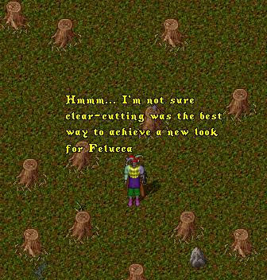
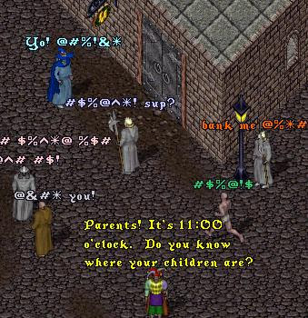
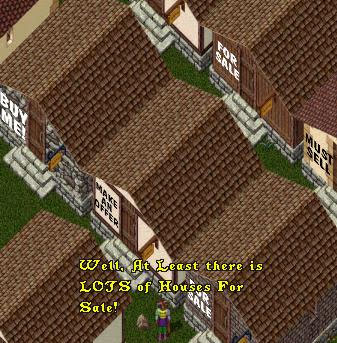
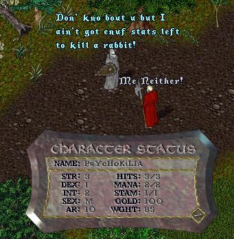
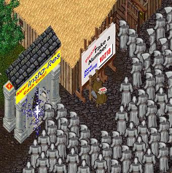

Episode 99: Postcards from Felucca. - Well last week I took a peek at the new proposed no-PvP lands of Trammel so this time it seems only fair to have a look at Felucca too. I have changed the format a bit to give you five quick peeks at what to expect in PvP Heaven :)
***WARNING*** - these images contain blatant stereotypes! It is all in fun, so don't get your shorts in a knot if you think I am taking unfair shots at the PvP fans.
Headline Felucca - OSI is planning changes to the
landscape that will give Felucca it's own special look.

Headline Felucca - OSI has indicated that some
tweaking may be necessary to the translation server
to handle the new official language of Felucca.

Headline Felucca - On the bright side, with the mass
exodus to Trammel, the availability of affordable
housing in Felucca has increased dramatically.

Headline Felucca - Changes in the basic playstyle
has created fears that the current stat-loss
provisions my inconvenience some players.

Headline Felucca - Even with the addition of the new
ARM's (Automatic Res Machines), players may
experience some delays at the healers.
